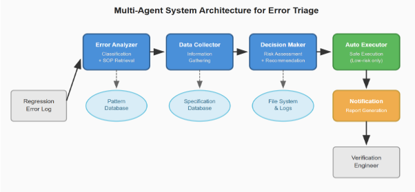

面向SoC RTL验证的基于AI Agent的错误解决系统
现代SoC验证流程在隔夜回归中产生数千条错误，工程师对每条错误平均需30-60分钟手工收集日志、历史案例与配置信息后才能决策，成为验证流程的系统性瓶颈。论文提出基于LangChain/LangGraph的五Agent系统（Error Analyzer、Data Collector、Decision Maker、Auto Executor、Notification），配合86条经生产验证的错误-解决方案模式RAG数据库（Qwen3 embeddings相似度检索）和MCP集成（MongoDB、OracleDB、文件系统），只自动化信息收集、保留人工决策。在30,132条回归测试的旗舰SoC项目案例研究中，单条错误信息收集时间从47分钟降至2.65分钟（平均降低94.4%），信息完整度83.3%，保守估计部署到4,963个可自动化错误后每个回归周期可节省3,668工程师小时。核心贡献是2,500+行编码RTL验证专业知识的领域特定prompt工程与安全约束设计。
现代SoC验证流程在隔夜回归测试中产生数千条错误，工程师在做出任何决策前，需对每条错误手工花费30分钟到1小时收集信息：查看错误日志、搜索相似历史案例、查阅文档与配置、收集系统状态。以30,132条回归测试的旗舰项目为例，早上一条50条错误的积压意味着25-50小时纯信息收集工作。这种信息收集是系统化、可自动化的，却仍是验证流程中的手工瓶颈，挤占了本应投入需要领域专业知识的复杂设计分析的高价值工程时间。
系统遵循"自动化信息收集、保留人工决策"的边界设计：SOP中步骤1-3（定位并打开日志、按关键词/行号识别错误模式、收集配置/环境/规格上下文）自动化，步骤4（解读结果并决定纠正措施）必须由工程师完成。核心组件：(1) 五Agent架构——Error Analyzer（内置SOP检索）、Data Collector、Decision Maker、Auto Executor、Notification，由LangChain/LangGraph编排，推理采用OpenAI-GPT-OSS-120B；(2) 86条经生产验证的错误-解决方案模式RAG数据库（源自common verification domain 6,617条测试中4,963个可自动化案例），用Qwen3 embeddings做相似度检索，免除人工错误分类；(3) 领域特定prompt工程（2,500+行），包含模式级错误特征、数据收集流程、风险评估框架与安全约束（禁止rm、sed -i、数据库写操作的黑名单，并指出仅白名单不够）；(4) 通过MCP（Model Context Protocol）集成MongoDB（历史案例）、OracleDB（规格数据）与验证服务器文件系统（日志、HDL文件）。部署策略为混合式：Category A用传统自动化，Category B/D（未定义案例占比>99%）用AI agent，Category C用组合方案。
单条错误信息收集时间从47分钟降至2.65分钟，平均降低94.4%
信息完整度平均83.3%（以资深工程师手工收集清单为基准的checklist评估）
保守估计部署到common verification domain的4,963个可自动化错误后，每个回归周期可节省3,668工程师小时
案例1（OPTERR配置错误）：SOP检索相似度0.89，查询到5个均以添加该选项解决的相似历史案例，工程师批准并在5分钟内验证修复；案例2（PATHERR路径不一致）：agent收集了当前/期望文件位置、Perforce同步状态与HDL_REVISION不匹配信息
能力评估：相比传统自动化，AI agent方法使成功率提升10-30%，最复杂的设计逻辑类（Category D）从40-50%提升至70-80%；AI agent方法可处理所有类别中70-90%的错误，包括占99.2%未定义案例的复杂设计逻辑错误
86个模式覆盖common domain约75%的错误
设定生产部署成功度量：信息完整度≥80%、时间缩减≥85%、自动执行准确率≥95%、工程师采纳率≥70%、模式库覆盖率>80%
与已有工作的区别：(1) 相比AutoCodeRover、AssertSolver等代码修复类系统，本文只自动化信息收集、保留人工决策，契合生产环境安全要求；(2) 相比HDLdebugger的通用HDL调试对话支持，本文面向具体验证工作流错误、采用多Agent角色分工，并与生产验证基础设施（MongoDB、OracleDB、文件系统）真实集成，且在30,132条测试的旗舰项目上验证而非模拟环境；(3) 相比LogLLM的微调路线，采用可增量更新的RAG检索，适应持续演化的验证错误模式；(4) 借鉴MetaGPT的SOP思想但扩展为86个来自生产工作流的模式级prompt；(5) 自称的核心贡献是2,500+行编码RTL验证专业知识的领域特定prompt工程（含错误特征、收集流程、风险评估与安全约束），使系统可在生产验证环境中实际部署。
相关度级别：high
命中能力域：2.4 设计验证方法学 | 2.7 EDA/验证自动化与 AI 辅助
理由：论文直接命中团队两个能力域：2.4设计验证方法学（回归错误triage、debug方法学是团队验证交付的日常高频工作）与2.7 EDA/验证自动化与AI辅助（LLM agent辅助验证流程自动化正是该域的代表性方向）。其"只自动化信息收集、保留人工决策"的边界设计与生产安全约束（命令黑名单、人工审批）对团队在IP回归流程中引入AI工具具有直接的方法论参考价值；86模式库把资深工程师tribal知识显性化为组织知识资产的思路，与团队"沉淀可复用方法学与自动化能力"的定位高度一致。需注意论文场景是SoC级回归（30,132条测试），团队IP产品线（LPDDR5X、HBM4、UCIe等）回归规模与错误类型分布不同，落地前需自建模式库并重新评估收益。
建议动作：深入精读并做内部分享
yonghyun kwon, hanna jang, Seonghee yim
摘要—现代片上系统（SoC）设计的寄存器传输级（RTL）验证在回归测试过程中会产生数千个错误，需要工程师投入大量时间进行分类甄别与信息收集。我们提出了一种多智能体系统，用于自动化RTL验证工作流程中的错误信息收集，平均减少94.4%的人工调查时间。该系统采用五个专用智能体——错误分析器（Error Analyzer）、数据收集器（Data Collector）、决策器（Decision Maker）、自动执行器（Auto Executor）和通知器（Notification）——通过LangChain/LangGraph进行编排，并结合领域特定的提示工程。我们通过一个包含30,132个回归测试的旗舰SoC项目的案例研究验证了该方法，结果表明信息收集任务中每个错误的处理时间从47分钟缩短至2.65分钟。该系统利用基于检索增强生成（RAG）的标准作业程序（SOP）检索机制，从包含86种模式的数据库中进行检索，该数据库编码了来自生产验证工作流程的经过验证的错误-解决方案对，并通过模型上下文协议（MCP）与现有基础设施集成。保守估计表明，当部署到通用验证领域中4,963个可自动化的错误时，每个回归周期可潜在节省3,668个工程师工时。我们的主要贡献是全面的领域特定提示工程，将RTL验证专业知识编码到智能体指令中，从而使其能够在生产验证环境中实际部署。
现代片上系统（SoC）验证工作流在隔夜回归测试期间会产生数千个错误。在一个包含30,132项回归测试的旗舰SoC项目中，验证工程师针对每个错误需要花费30分钟到1小时手动收集信息：查看错误日志、搜索类似的历史案例、查阅文档以及收集系统状态。这种重复性的信息收集消耗了大量工程资源，而这些资源本可以更好地用于需要领域专业知识的复杂设计分析。
设想一个典型场景：工程师早上到达时发现隔夜回归产生了50个错误。在做出任何决策之前，他们必须花费25-50小时仅仅用于收集这些错误的相关信息——打开日志文件、在数据库中搜索类似案例、检查配置文件以及查阅规格说明。这种信息收集工作是系统性的且可自动化的，然而它仍然是验证工作流中的一个手动瓶颈。
实现寄存器传输级（RTL）验证错误分诊的自动化面临若干挑战：
我们提出了一种专注于RTL验证错误分诊信息收集自动化的多智能体系统。我们的系统并不试图实现完全的错误解决自动化——那将需要RTL设计专业知识——而是将工程师做出明智决策所需的系统性信息收集过程自动化。
我们的方法包括：
五智能体架构：错误分析器（Error Analyzer，集成标准作业程序（SOP）搜索）、数据收集器（Data Collector）、决策器（Decision Maker）、自动执行器（Auto Executor）和通知智能体（Notification agent）
86模式检索增强生成（RAG）数据库：来自生产验证流程的经过验证的错误-解决方案对，支持基于相似度的SOP检索
领域特定的提示工程：编码了RTL验证专业知识的详细智能体指令（我们的关键贡献）
基于RAG的模式匹配：使用Qwen3嵌入向量对86个模式进行相似度搜索，以实现准确的错误-解决方案配对
模型上下文协议（MCP）集成：使用MongoDB存储历史案例，使用OracleDB存储规格数据，并通过文件系统访问日志和硬件描述语言（HDL）文件
第II节综述自动化调试与基于大语言模型（LLM）的智能体系统方面的相关工作。第III节介绍我们的系统架构。第IV节详细阐述我们的领域特定提示工程（关键贡献）。第V节报告实现与案例研究验证。第VI节讨论相关见解、局限性与部署考量。第VII节对全文进行总结。
AutoCodeRover [1] 展示了利用基于大语言模型（LLM）的智能体实现自动化程序修复，在 SWE-bench 基准测试上取得了 46% 的成功率。其两阶段方法先采用上下文检索智能体，随后采用修复智能体。尽管该方法对软件缺陷的处理令人印象深刻，但其对代码修改的关注与我们针对验证错误所采用的信息收集方法有所不同。我们将安全性与人工监督置于完全自动化之上。
SWE-bench [2] 建立了一个基准，用于评估 AI 系统在源自 GitHub issue 的真实世界软件工程任务上的表现。其数据集包含来自热门 Python 代码仓库的 2,294 个 issue-拉取请求（pull request）对。我们的工作在领域（寄存器传输级（RTL）验证 vs. 软件开发）和范围（信息收集 vs. 完全解决）上均有所不同。
LogLLM [3] 提出使用大语言模型（LLM）进行基于日志的异常检测与根因分析。其方法在日志数据上对 LLM 进行微调以实现模式识别。我们采用基于检索增强生成（RAG）的检索而非微调，因为验证错误模式在不断演变，微调将需要频繁的重新训练。我们的 86 模式数据库可以增量更新。
DeepLog [4] 使用长短期记忆（LSTM）网络进行日志异常检测，并结合序列模式学习。尽管其在检测异常方面行之有效，但它并未提供验证工程师所需的可操作信息收集。我们的系统专注于收集解决问题所需的具体信息，而不仅仅是检测。
我们的系统架构遵循一个基本原则：自动化信息收集，保留人类决策。对处理 RTL 验证错误的标准操作规程（SOPs）的分析揭示出一种一致的模式：
定位并打开相关日志文件
使用关键词/行号识别错误模式
收集上下文信息（配置、环境、规格说明）
[需要人工决策]：解读分析结果并确定纠正措施
步骤 1-3 是系统性的且可自动化。步骤 4 需要 RTL 设计知识，无法安全地实现自动化。我们的架构正体现了这一边界。
我们系统的知识库由 86 个经过验证的错误-解决方案模式组成，这些模式精选自一个拥有 30,132 个回归测试的旗舰 SoC 项目中通用验证域（6,617 个测试，占总数的 22%）内的 4,963 个可自动化案例。
模式数据库构建：数据库中的每个模式包含：
错误模式覆盖：这 86 个模式涵盖了 RTL 验证错误的各种类型：
基于检索增强生成（RAG）的检索：我们的 Error Analyzer 智能体无需人工进行错误分类，而是使用基于 Qwen3 嵌入的相似度检索，将传入的错误与 86 模式数据库进行匹配。这种方法使系统能够：
这种基于模式的方法消除了对显式分类的需求，同时通过精选且经过验证的错误-解决方案对保持了高准确率。
我们的系统采用五个专用智能体，通过 LangChain/LangGraph 进行编排：

-
智能体编排：LangChain/LangGraph，用于智能体工作流管理
大语言模型（LLM）：OpenAI-GPT-OSS-120B，用于智能体推理
检索增强生成（RAG）：Qwen3 嵌入向量，用于错误模式相似性搜索
数据库：SQL（OracleDB）、NoSQL（MongoDB）
模型上下文协议（MCP）：自定义服务器，用于 MongoDB 访问、OracleDB 查询以及验证服务器上的文件系统操作
平均工作流时间：2.65 分钟（对比 47 分钟的人工基线）
要实现 RTL 验证错误分诊的有效自动化，需要能够编码领域专业知识的提示词。我们确定了四项关键设计原则：
领域特异性：通用指令在 RTL 验证中会失效。有效的提示词必须包含：
示例：提示词不是笼统地说“分析错误”，而是明确指定“cat /project/config/sim.cfg 并 grep 查找 SIMULATION_TIMEOUT 选项，然后与 /opt/templates/sim.cfg.template 中的模板进行比较”。
结构化输出：智能体必须生成可解析的 JSON 以支持工作流编排：
安全约束：生产环境需要明确的边界：
禁止操作的黑名单（rm、sed -i、数据库写入）
仅靠白名单是不够的——智能体可能以不安全的方式组合允许的命令。明确的禁止可防止意外操作。
上下文保留：每个智能体都获得足以独立运行的上下文：
数据集：旗舰 SoC 项目回归测试
以公共域为目标的理由：公共验证域中的错误会影响多个 IP 模块和设计团队，从而产生最大的组织影响。若要全面部署到全部 30,132 个测试，则需要将模式数据库扩展到超出当前 86 个模式的规模。
验证方法学：
我们使用旗舰项目历史错误中的 1-2 个代表性案例对系统进行了验证。表 I 给出了详细结果：
| 0 | 1 | 2 | 3 |
|---|---|---|---|
| Metric | Case 1: Option Error | Case 2 : Path Error | Average |
| Manual Process Time | 50 min | 44 min | 47 min |
| Agent Process Time | 2.5 min | 2.8 min | 2.65 min |
| Time Reduction | 47.5 min (95%) | 41.2 min (93.6%) | 44.35 min (94.4%) |
| 0 | 1 | 2 | 3 |
案例 1 - OPTERR（配置错误）：仿真配置文件中缺少 SIMULATION_TIMEOUT 选项。Agent 正确识别了错误类别，检索到匹配的标准作业程序（SOP）（相似度 0.89），收集了配置文件内容和模板，查询了 5 个类似的历史案例（均通过添加该选项得以解决），并建议添加默认值 3600。工程师批准了该修复，并在不到 5 分钟内完成了验证。
案例 2 - PATHERR（路径不匹配）：由于 Perforce 同步问题导致硬件描述语言（HDL）文件路径版本不一致。Agent 识别出路径不匹配模式，收集了当前文件位置、预期位置、Perforce 同步状态以及 HDL_REVISION 不匹配信息，并检索到用于解决同步问题的 SOP。工程师执行了所建议的 Perforce 同步命令，并验证了问题已解决。
信息完整性：基于检查清单的评估，将 Agent 收集的信息与经验丰富的工程师手动收集的信息进行对比。平均 83.3% 的结果表明 Agent 能够收集大部分关键信息，其余 16.7% 为可选的上下文条目。
为了验证我们的方法在不同错误类别上的有效性，我们对传统自动化系统与基于 AI Agent 的方法进行了对比分析。表 II-V 展示了针对四个主要错误类别（A-D）的详细能力评估，这些类别代表了不同的复杂度水平和自动化挑战。
| Category | Defined Issues | Success Rate | Reasoning |
|---|---|---|---|
| A Domain | 10 | 85-90% | Template-based patterns, clear error codes |
| B Domain | 5 | 60-70% | High undefined rate, insufficient patterns |
| C Domain | 9 | 80-85% | Structured register patterns |
| D Domain | 6 | 40-50% | Complex MMU logic, high undefined rate |
| Category | Defined Issues | Success Rate | Reasoning |
传统自动化系统在具有明确定义模式的类别 A 上表现良好，但在类别 D 上则面临显著困难，由于复杂的推理需求，其成功率降至 40-50%。
| Category | Defined Issues | Success Rate | Reasoning |
|---|---|---|---|
| A Domain | 10 | 85-90% | Pattern learning helps with variations |
| B Domain | 5 | 70-80% | Can learn from undefined cases |
| C Domain | 9 | 85-90% | Context-aware register analysis |
| D Domain | 6 | 70-80% | Complex pattern learning, fewer undefined |
| Category | Defined Issues | Success Rate | Reasoning |
我们基于 AI 智能体的方法展现出显著的改进，尤其是在类别 B 和类别 D 中。从上下文中学习并处理未定义情况的能力，使成功率相比传统自动化提高了 10-30%，其中在复杂设计逻辑场景中的提升最为显著（类别 D：40-50% → 70-80%）。
| 0 | 1 | 2 | 3 | 4 |
|---|---|---|---|---|
| Category | Undefined Issues | % of Toal | AI Learning Potential | Reasoning |
| A Domain | 28 | 10.0% | Medium | Small volume |
| B Domain | 1904 | 99.3% | Very High | Critical categorization need |
| C Domain | 496 | 60.3% | High | Large volume of unknowns |
| D Domain | 6832 | 99.2% | Critical | Massive undefined volume |
| 0 | 1 | 2 | 3 | 4 |
分析表明，类别 B 和类别 D 中主要包含未定义情况（>99%），使其成为部署 AI 智能体的首选对象。传统的基于规则的系统无法有效处理这些未定义模式，而 AI 智能体则能够通过模式识别和上下文分析来学习并适应新的错误类型。
| Category | Priority | Recommended Approach | Success Rate Target | Rationale |
|---|---|---|---|---|
| A Domain | Medium | Automated System | 85-90% | Well-defined patterns |
| B Domain | High | AI Agent (urgent) | 70-80% | 99.3% undefined, needs AI |
| C Domain | Medium- High | Hybrid (Auto + AI) | 80-85% | 60% undefined rate |
| Category | Priority | Recommended Approach | Success Rate Target | Rationale |
| 0 | 1 | 2 | 3 | 4 |
|---|---|---|---|---|
| D Domain | Critical | AI Agent (essential) | 70-80% | 99.2% undefined, complex logic |
| 0 | 1 | 2 | 3 | 4 |
基于这些发现，我们推荐一种混合部署策略：对于定义明确的模式（类别 A）采用传统自动化，对于未定义率较高的情况（类别 B 和类别 D）采用 AI 智能体，对于中间情况（类别 C）采用组合方法。该策略在保持所有错误类别高成功率的同时，最大化了自动化覆盖率。
我们承认我们的验证中存在以下局限性：
有效之处：
具有挑战性的方面：
组织影响：
我们系统的部署预计将对验证组织产生重大影响。保守估计，针对通用领域中 4,963 个可自动化的错误，每个回归周期可节省 3,668 个工程师工时。这使得隔夜回归测试之后的错误积压处理时间从数天大幅缩短至数小时。更重要的是，资深验证工程师得以从重复性的信息收集任务中解放出来，专注于分析复杂设计问题等高价值活动。此外，86 模式数据库还带来一个附带收益：将经验丰富的工程师的隐性知识（部落知识）显式地记录下来，并将其积累为组织的知识资产。
部署挑战：
然而，要部署到生产环境，需要解决若干实际挑战。首先，构建初始的 86 模式数据库需要领域专家投入大量时间，以系统地审查并验证历史案例。其次，每当验证工具或流程发生变更时，都需要持续更新系统提示词，这构成了持续的维护负担。第三，建立工程师对自动化系统的信任至关重要，这要求在初始部署阶段展现出足够的可靠性与准确性。第四，需要开展技术基础设施集成工作，包括 MCP 服务器配置、数据库访问权限以及验证服务器连接。最后，从传统的手动排查工作流程过渡到审查智能体（Agent）建议的新工作流程，工程师培训与变革管理必不可少。
生产部署的成功度量指标：
我们建立了以下可度量的目标指标，用于评估部署是否成功。智能体收集的信息完整度必须保持在 80% 或以上，使工程师无需额外的信息收集即可做出决策。与手动流程相比的时间缩减必须持续达到 85% 或以上，以体现显著的效率提升。自动执行准确率必须保持在 95% 或以上，以将错误修改带来的副作用降至最低。工程师采用率必须达到 70% 或以上，以确认组织层面的接受度。此外，模式数据库的覆盖率必须超过通用领域错误的 80%，以便为大多数错误类型提供自动化支持。
本研究存在若干明确的局限性。最重要的局限性在于，我们仅使用 1-2 个代表性案例进行了初步验证。要确认系统在全部 4,963 个可自动执行案例上的有效性，大规模生产部署和全面的性能评估必不可少。其次，当前的 86 个模式仅覆盖约 75% 的通用领域错误，剩余 25% 的错误无法匹配或需要定义新模式。第三，模式数据库是静态的，无法从新的错误案例或工程师反馈中自动学习，而只能依赖人工更新。这可能随时间推移增加系统的维护负担。
未来研究方向：
为克服上述局限性并进一步推进系统发展，我们规划了三个后续研究方向。短期内，我们将开展试点部署，把系统应用于全部 4,963 个通用领域案例，并系统性地收集信息完整度、时间缩减率和工程师满意度等综合指标。中期目标是开发动态模式学习机制，使其能够从工程师反馈和成功解决的案例中自动学习新模式，从而减少人工整理的工作量。长期目标是把目前仅限于一个旗舰 SoC 项目的验证结果扩展到多种 SoC 项目、设计方法学和组织环境中，以确立本方法的泛化能力。
我们提出了一种多智能体系统，用于自动化 RTL 验证错误分诊中的信息收集，解决了现代 SoC 验证流程中的一个关键瓶颈。我们的系统采用五个具备领域特定提示工程的专业智能体和一个包含 86 种模式的 RAG 数据库，基于来自拥有 30,132 个回归测试的旗舰 SoC 项目的案例研究，在信息收集任务中实现了 94.4% 的时间缩减（47 分钟 → 2.65 分钟）。
我们的关键贡献是全面的提示工程，它将 RTL 验证专业知识编码到智能体指令中，使系统能够在生产环境中实际部署。这 2,500 多行领域特定提示包括模式特定的错误特征、数据收集流程、风险评估框架和安全约束。
保守估计表明，若部署到通用验证领域中 4,963 个可自动化的错误，每个回归周期可潜在节省 3,668 个工程师工时。我们的能力评估表明，基于 AI 智能体的方法能够处理所有类别中 70-90% 的错误，包括此前无法自动化的复杂设计逻辑错误——这类错误占未定义案例的 99.2%。这将验证工程师从重复性的信息收集中解放出来，使其能够专注于需要领域专业知识的复杂设计问题。
本工作表明，通过专注于信息收集而非尝试完整的错误解决，可以实现显著的自动化收益。通过在自动化系统性数据收集的同时保留人类决策，我们既符合生产安全要求，又能够利用 AI 能力创造实用价值。